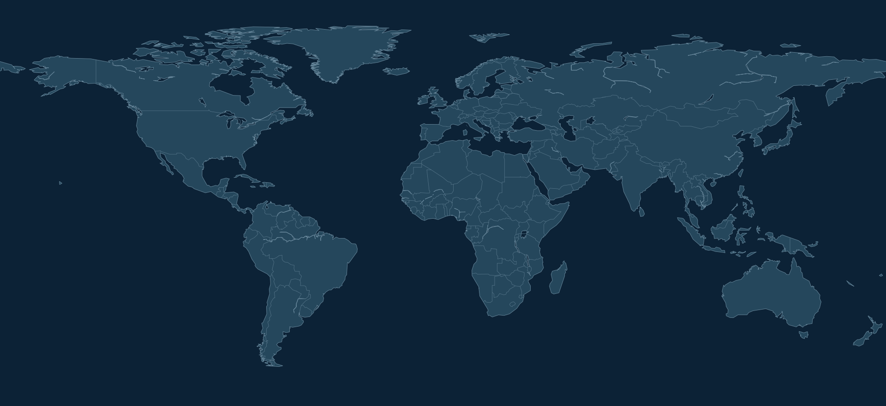

Economics & Research
Market research, econometrics, competitive analysis, and interpreting data.
I'm Ivanna Hirniak, an Economics student at Penn State who enjoys exploring business, technology, and how the world works. This is where I share my projects, experiences, and what I've been learning along the way.
Explore my work ↗ Get to know me →Research, financial modeling, and business strategy projects I've completed.
I'm studying Economics at Penn State with a minor in Information Systems Management. I'm interested in understanding how businesses grow, how people make decisions, and how technology can help solve problems.
I've lived in eight countries, and growing up in different places shaped how I see people, cultures, and economies. Outside of school, I enjoy soccer, Sudoku, cooking, and cats.
I made this website to share what I've learned and what I'm working on as my interests keep growing.
View my résumé ↗
Analyzed expense and VAT data, built Power BI dashboards, and shared budget findings with teams and directors.
Support students studying econometrics and review quantitative assignments.
Completed individual and team consulting training cases involving market research, financial analysis, and recommendations.
Work with prospective advertising clients and recommend print and digital advertising solutions.
Market research, econometrics, competitive analysis, and interpreting data.
Excel, financial modeling, forecasting, budget analysis, and Power BI.
Developing my Python skills, learning SQL, and exploring AI applications.
I'm always interested in meeting new people, exchanging ideas, and learning about opportunities in business, economics, and technology.
hirniakivanna@outlook.com